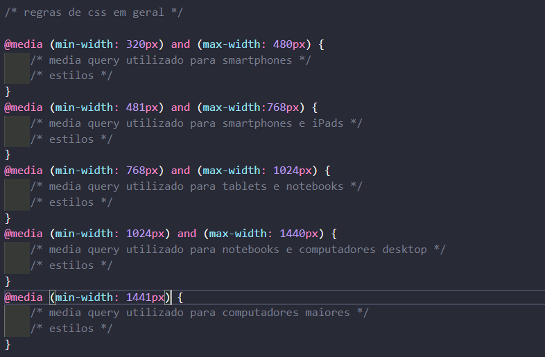
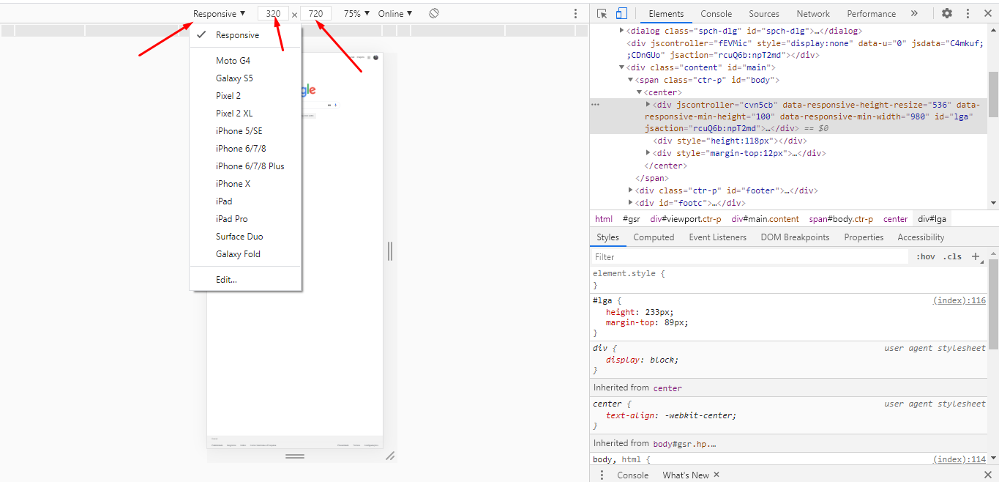
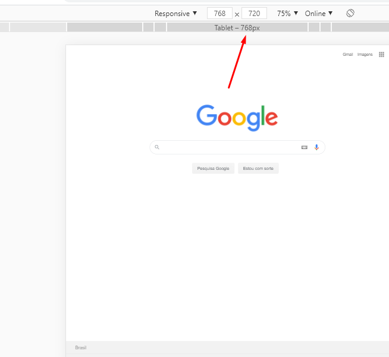

Conforme a tecnologia vem avançando, nos dias de hoje, grande parte das pessoas está munida de um smartphone, para maior praticidade em realizar suas tarefas. Dessa forma, os desenvolvedores não estão fazendo mais aplicações somente para desktop ou para computadores; estão também fazendo sites que sejam acessíveis por qualquer dispositivo móvel, seja ele celular ou tablet. Mas, o que os desenvolvedores utilizam para fazer essa adaptação? Será apresentado no artigo a seguir somente uma delas, que é o uso de media query.
Assim, é notável afirmar que existem vários frameworks que nos auxiliem com a responsividade de um site. Porém, para quem se aventura em escrever CSS3 puro, o media query é uma excelente maneira de alinhar a aplicação que você está desenvolvendo para a mesma ser acessada em qualquer dispositivo móvel.
Além disso, muitas empresas já trabalham com a metodologia denominada mobile first, que é qualquer tipo de aplicação que for ser desenvolvida, antes de mais nada, ela é projetada nos dispositivos móveis, antes de ser projetada para os computadores. Ou seja, é um caminho inverso do que algumas empresas ainda fazem nos dias de hoje, que é o de projetar diretamente para computadores ou notebooks.
Vejamos alguns exemplos abaixo, de como adaptar seu site a qualquer dispositivo móvel, utilizando a ferramenta de media query:
Dessa maneira, há um recurso no navegador Google Chrome que nos auxilia com a responsividade dos sites e, que até tem uma lista de alguns aparelhos para selecionarmos e verificar se o responsivo do site atende às necessidades. Abaixo, um exemplo de uma foto retirada da página do Google:
Logo, o procedimento acima é feito ao apertar a tecla F12 do seu teclado e, além de fornecer uma lista padrão dos celulares, há outras medidas para serem visualizadas, como a de tablets, conforme exemplo abaixo:
Assim, a largura pode ser ajustada conforme a necessidade, nos campos necessários.
Destarte, vimos como a responsividade em uma aplicação web, nos dias de hoje, se tornou algo imprescindível para o menor sistema possível, pois, como a grande parte das pessoas utiliza o celular ou tablet para ter maior praticidade em suas tarefas, um cliente final não gostaria de acessar a sua aplicação pelo celular e ver algo torto nela; isso seria algo muito desagradável. Contudo, com o auxílio dos media queries, a responsividade não é um bicho de sete cabeças, pois você pode utilizar seu próprio navegador de internet ao seu favor, para testes de o quão responsivo o seu site está, antes dele ser entregue ao usuário final.